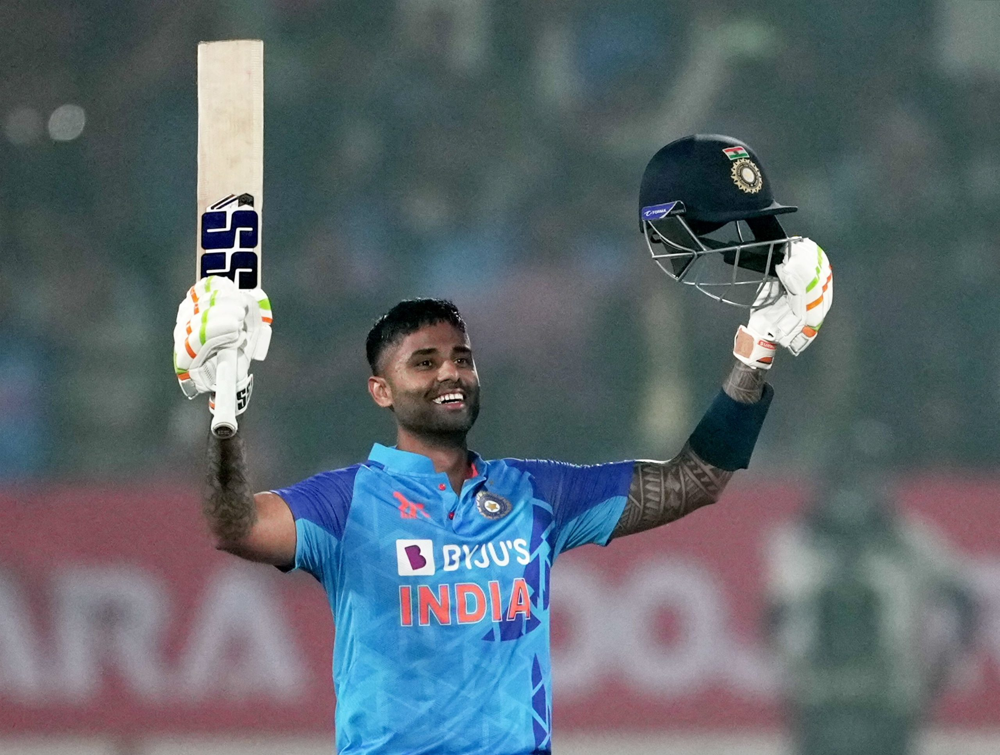

Suryakumar Yadav
Indian cricketer

Surya Kumar Yadav is an Indian international cricketer who represents the Indian cricket team in
ODI & T20I Formats. He is the current vice-captain of the Indian National Cricket Team in T20I. He has represented India in all three formats of the game.